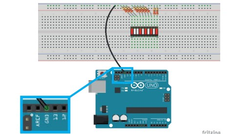

- Escola
- Estudante
- Trabalhos
Encaixar a barra gráfica de LEDs na linha central do Protoboard, conectando dez terminais nos furos da região superior e dez terminais na região inferior, como na imagem abaixo

Conectar os 10 resistores no Protoboard, um dos terminais conecta na parte superior da Barra Gráfica e o outro lado do terminal na linha lateral azul(lado negativo)
Conectar 1 jumper no pino GND da placa arduino á linha lateral azul do Protoboard:
Utilizar 5 jumpers, fazer a ligação em cincos terminais da Barra Grafica com os 5 pinos digitais do Arduino, que são os pinos 2, 3, 4, 5 e 6.
E conectar mais 5 jumpers nos cincos terminais da direita da Barra Gráfica com os outros cinco terminais da esquerda.
/* Programa de controle sequencial de LEDs */
int delay_milis = 30;
void setup() {
/* Define os pinos de 2 a 7 como saídas */
for (int i = 2; i <= 11; i++) {
pinMode (i, OUTPUT);
}
}
void loop() {
/* Pisca os LEDs na sequência dos pinos 2 a 7 */
for (int i = 2; i <= 11; i++) { digitalWrite(i, HIGH);delay(delay_milis);
digitalWrite(i, LOW);
delay(delay_milis);
}
/* Pisca os LEDs na sequência dos pinos 7 a 2 */
for (int i = 10; i >= 3; i--) {
digitalWrite(i, HIGH);
delay(delay_milis);
digitalWrite(i, LOW);delay(delay_milis);
}
}